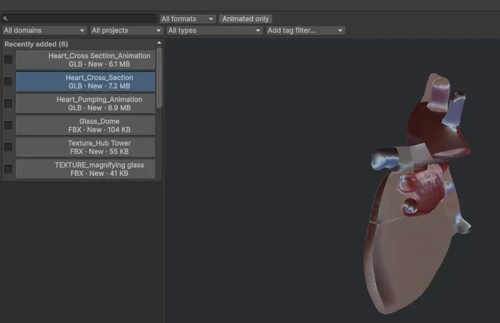

Asset library
A searchable catalogue of every 3D model the company has made, 2,248 so far. A nightly job scans the company’s repositories for models, removes duplicates and adds tags from a vision model, which people correct where needed.
Artists and developers search it on the web or in this Unity window, filter by format, type or tag, and preview a model in 3D before using it.
The nightly job never clones a repository. It reads each branch’s file list, looks again only at branches that changed, and recognises large files from their pointers. Blender renders each new model from four sides for the vision model, and name or tag fixes made on the web or in Unity are committed back to the catalogue.